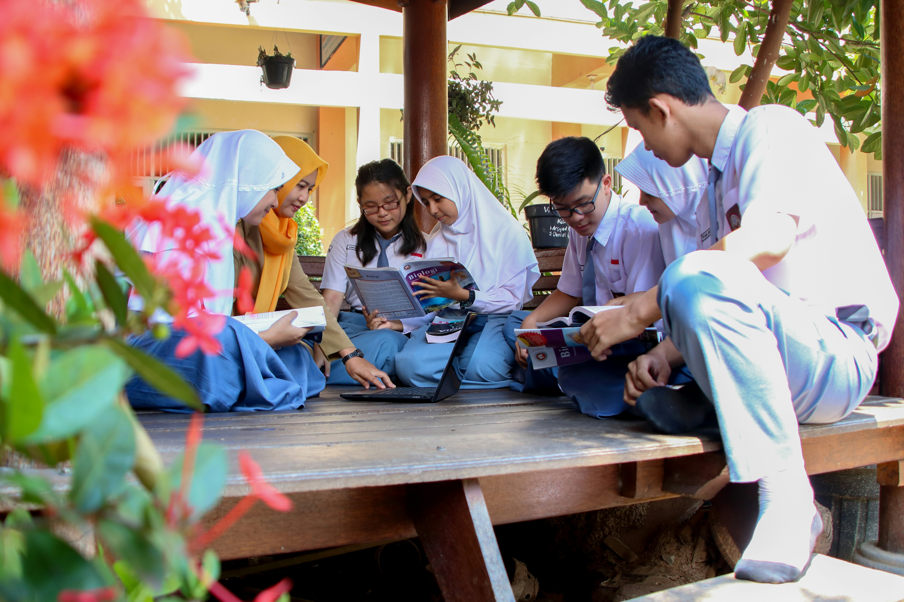
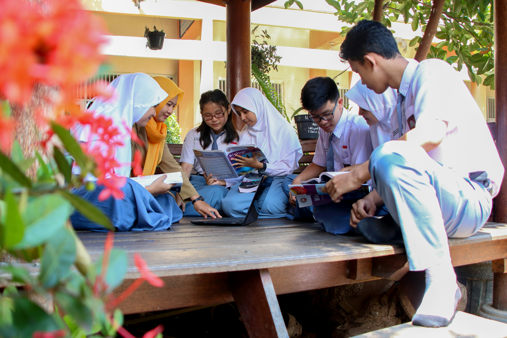

WELCOME TO SEDEC
Caritas Sri Lanka-SEDEC is the social arm of the Catholic Bishops’
Conference of Sri Lanka and is affiliated to Caritas Internationalis,
a confederation of 162 Catholic relief, development, and social
service organizations present in 200 countries and territories.
Our national centre is located in the Archdiocese of Colombo, Sri
Lanka’s capital city. Our vision is radiated to the far corners of the
island through 13 Diocesan Centres. Caritas Sri Lanka-SEDEC is also
the national secretariat of the National Catholic Commission for
Justice Peace and Human Development.